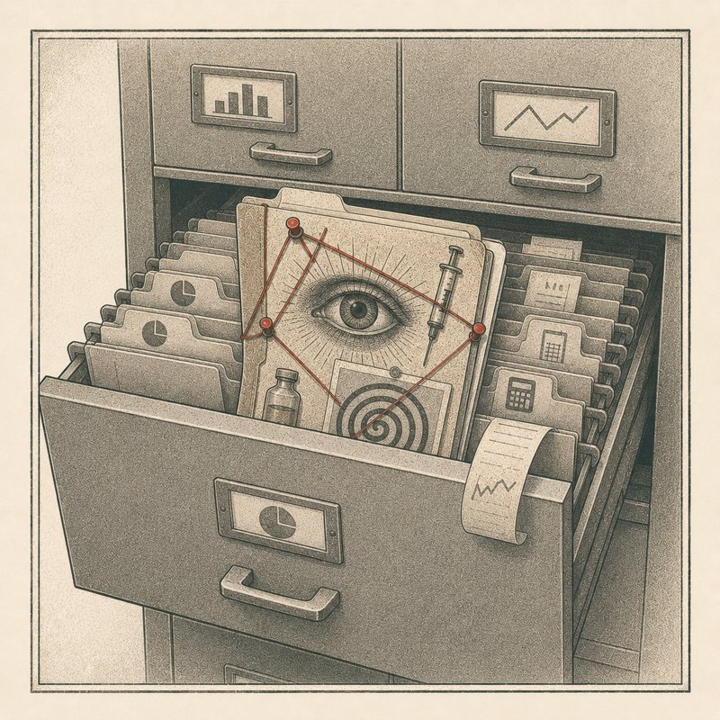

Beweise

20.000 echte Seiten, 1977 im falsch einsortierten Finanzarchiv gefunden – seither dient das reale CIA-Verbrechen der Szene als Generalbeweis für jede erfundene Fortsetzung.
MKULTRA war ein reales Staatsverbrechen: Von 1953 bis in die frühen 1970er-Jahre testete die CIA illegal Substanzen wie LSD an ahnungslosen Menschen, darunter Psychiatriepatienten und Gefangene. 1973 ließ CIA-Direktor Richard Helms die Akten vernichten – doch rund 20.000 Dokumente überstanden die Aktion nur, weil sie fälschlich in einem Gebäude für Finanzunterlagen einsortiert waren; dort tauchten sie 1977 nach einer Informationsfreiheitsanfrage des Autors John Marks wieder auf und ergänzten die Aufarbeitung durch Church Committee, Rockefeller Commission und die Senatsanhörungen von 1977. Keinerlei Belege gibt es dagegen für angebliche Fortsetzungen wie das „Project Monarch“, das in keiner wissenschaftlichen oder journalistischen MKULTRA-Aufarbeitung auftaucht und allein auf den unbelegten Selbstaussagen der Autorin Cathy O'Brien beruht. Auch die „Targeted-Individuals“-Szene nutzt den echten Skandal als Pauschalbeweis für heutige Gedankenkontrolle; die Forschung (Sheridan & James 2015) stufte jedoch alle 128 untersuchten „Gang-Stalking“-Berichte als wahrscheinlich wahnhaft ein – gegenüber 3,9 Prozent bei Einzel-Stalking. Das Leiden der Betroffenen ist real, seine Ursache aber eine Erkrankung, nicht die CIA. Genau dieser Mechanismus – ein belegtes, abgeschlossenes Verbrechen als Universalbeleg für jede erfundene Fortsetzung – ist es, den diese Karte parodiert.
Quellen zum realen Hintergrund:
en.wikipedia.org → nsarchive.gwu.edu → tandfonline.com → en.wikipedia.org →